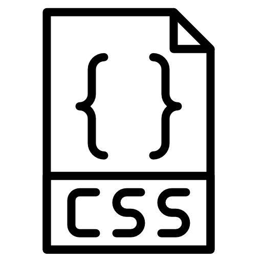

menu burger qui disparait au cliques d'un raccourci
entre a propos et exp user ajouter :
-valeurs travaille
-mettre trucs style testing/exp user
animation apparition gauche droite pour les compétences
+, ajouter php / sass / ... (avec des barre de progression)
+ compétences design et autres logiciel (git, word, ...)
transition plus douce sur mes formations + couleur a revoir
vers la fin :
photo illustration meilleure ?
ma photo + description
mettre lien vers mes sites
(ajouter cv en pdf)
toutes fin :
responsive
++ tard :
Diverses animations en JavaScript
Projet a rajouter + citations, caroussel, bootstrap...
Mes compétences
HTML - 100%
Index
Tableau
Formulaire

CSS - 80%
Bootstrap
SCSS / SASS
Responsive
Mobile First
Animation
...
JS - (En cours)
DOM
Animation
Regex
jQuery
Node.js
Angular